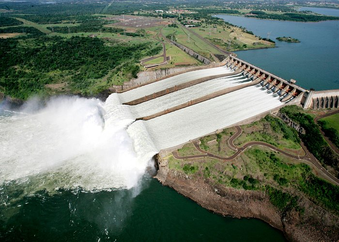

Vista aérea da barragem — 7.919 metros de extensão.
📖 Sobre a Usina
A Usina Hidrelétrica de Itaipu é uma das maiores do mundo em geração de energia. Foi construída no Rio Paraná, na fronteira entre o Brasil (Foz do Iguaçu – PR) e o Paraguai (Hernandarias). O nome vem do tupi e significa "pedra que canta".
Números impressionantes
- Construção: de 1975 a 1984
- Altura: 196 metros
- Extensão: 7.919 metros
- Turbinas: 20 (10 brasileiras + 10 paraguaias)
- Potência instalada: 14.000 MW
Importância energética
- 🇵🇾 Fornece cerca de 75% da energia do Paraguai
- 🇧🇷 Fornece cerca de 15% da energia do Brasil
📷 Galeria de Fotos


🎓 Curiosidades
🌍 Uma das 7 Maravilhas do Mundo Moderno
Itaipu é reconhecida mundialmente como uma das maiores obras de engenharia da humanidade.
🐟 Possui um canal da piracema
O Canal da Piracema foi construído para que os peixes possam subir o Rio Paraná e se reproduzir acima da barragem.
🚢 O Rio Paraná foi desviado
Durante a construção, os engenheiros desviaram temporariamente o leito do rio — uma obra gigantesca.
💡 Vazão 40x maior que as Cataratas
Quando o vertedouro está aberto, a vazão é cerca de 40 vezes maior que a das Cataratas do Iguaçu.
🗺️ Como Visitar
A usina oferece vários passeios guiados para turistas e estudantes:
- 🚌 Visita Panorâmica — ônibus com paradas em mirantes
- 🔧 Visita Técnica — por dentro da usina, vendo as turbinas
- 🌙 Itaipu Iluminada — visita noturna com show de luzes
- 🏛️ Ecomuseu — história da construção e da região